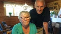

Ingrid Viola Eriksson
Postbiträde i Avesta 1960.
| Född: | 1934-05-09 Bollnäs, Bollnäs fs, Bollnäs sn. [1] |
|---|
| Levde: | 1950 Söräng 2:4, Bollnäs fs, Bollnäs sn. [1] |
|---|
| Vigsel: | 1959-04-11 Avesta, Avesta fs, Avesta kn. [2] |
|---|
| Levde: | 1975 Odeng. 12 B, Avesta fs, Avesta kn. [3] |
|---|
Personhistoria
| Årtal | Ålder | Händelse |
|---|
| 1934 |
|
Födelse 1934-05-09 Bollnäs, Bollnäs fs, Bollnäs sn [1] |
| 1943 |
9 år |
Brodern Ulf Sigfrid Eriksson föds 1943-11-16 Bollnäs, Bollnäs fs, Bollnäs sn [1] |
| 1950 |
|
Levde 1950 Söräng 2:4, Bollnäs fs, Bollnäs sn [1] |
| 1959 |
24 år |
Vigsel Lars-Åke Hedlund 1959-04-11 Avesta, Avesta fs, Avesta kn [2] |
| 1960 |
26 år |
Dottern Ingrid Marie Hedlund föds 1960-07-07 Avesta, Avesta fs, Avesta kn [2] |
| 1965 |
30 år |
Dottern Eva Helena Hedlund föds 1965-03-27 Avesta, Avesta fs, Avesta kn [3] |
| 1975 |
|
Levde Lars-Åke Hedlund 1975 Odeng. 12 B, Avesta fs, Avesta kn [3] |
| 1979 |
45 år |
Fadern Albin Sigfrid Eriksson dör 1979-10-27 Läroverksg 46 B, Bollnäs, Bollnäs fs, Bollnäs kn [4] |
| 1997 |
62 år |
Modern Ebba Ingeborg Holmberg dör 1997-04-04 Läroverksg 46 B, Bollnäs, Bollnäs fs, Bollnäs kn [5] |
| 2016 |
82 år |
Brodern Ulf Sigfrid Eriksson dör 2016-05-28 Segersta, Hanebo-Segersta fs, Bollnäs kn [6] |
Källor
| [1] | Mtl Sveriges befolkning 1950 |
| |
| | |
| [2] | Mtl Sveriges befolkning 1960 |
| |
| | |
| [3] | Mtl Sveriges befolkning 1975 |
| |
| | |
| [4] | RTB 79, SPAR 80, SDB7_02050365 |
| |
| | |
| [5] | RTB 97, SPAR 92f, SPAR 97, SDB7_02327433 |
| |
| | |
| [6] | FK 16, man91, SDB7_05420787 |
| |
|
|  |
2018-08-13. Stolta morföräldrar i stugan där Armand Duplantis brukade tillbringa sina somrar.
Foto: Gunilla Wikström, SVT
|
|
{kind=link}